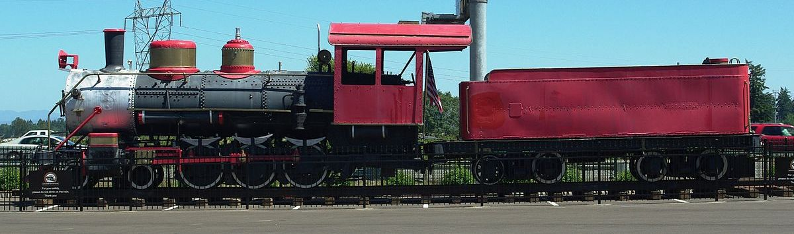

Last updated: 4 September, 2025
| Builder: | Baldwin |
| Build #: | 24252 |
| Date: | 1904 |
| Engine #: | 2438 (6) |
| Railroad: | Ferrocarril Coahuila y Zacatecas Railroad (CyZ), Mexico1 |
| Website: | |
| Email: | |
| Location: | Keizer Station Shopping Center (In-N-Out Burger) 6280 Keizer Station Blvd, Keizer, OR 97303 |
| GPS: | 45.010298,-122.994591 |
| Phone: | |
| Status: | Display |
| Notes: | Built as a 4-6-2, from Claremont then Menifee then Murrieta, CA |
| Class: | 36" |
| Gauge: | 4-6-0 |
| F.M.Whyte: | |
| Drivers: | |
| Gear Ratio: | |
| Tractive Effort: | |
| Weight: | |
| Weight on Drivers: | |
| Length: | |
| Boiler: | |
| Cylinders: | |
| Top Speed: | |
| Fuel: | |
| Fuel Type: | |
| Water: | |
| Steam psi: |